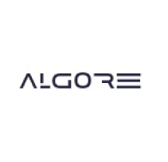
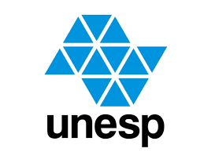

Experiência Profissional
2 anos 2 meses no mercado

Algore Soluções em Tecnologia
Analista de Desenvolvimento Júnior (1 ano e 2 meses) 2023-2024
- Desenvolvedor de sistemas: levantamento de escopo e requisitos, avaliação de risco, manutenibilidade e desenvolvimento de Web APIs (Rest, Soap), etc. Consegui adquirir muita experiência em montagem e gestão de sites, principalmente no que tange as linguagens básicas de front e backend PHP, Html, Css, React, dentre outros. Experiência com banco de dados Mysql e Sql Server, gestão do banco em si e sua comunicação para consulta e armazenamento de dados provenientes de softwares e sites (CRUD). Utilização de metodologias ágeis como Kanban e Scrum.

FEC - Faculdade de Engenharia e Ciências - Câmpus de Rosana – Unesp
Pesquisador de Software (1 ano) 2022-2023
- Durante minha experiência como pesquisador de software para a UNESP, fui responsável por realizar pesquisas sobre novas tecnologias e tendências em desenvolvimento de software, projetar e desenvolver protótipos para experimentação e validação de ideias, analisar dados para identificar insights relevantes, colaborar com equipes multidisciplinares, documentar e apresentar resultados de pesquisas, desenvolver algoritmos e modelos, participar de eventos para me manter atualizado, realizar testes de usabilidade e experiência do usuário, colaborar no desenvolvimento de estratégias e publicar artigos relevantes. Meus principais resultados incluem o desenvolvimento de protótipos inovadores, a identificação de insights para melhorias significativas, a integração eficiente de pesquisas no ciclo de desenvolvimento de software, a criação de algoritmos eficazes e a contribuição para a disseminação do conhecimento na área. Posteriormente, publiquei um artigo científico com base no desenvolvimento de um software (Software Gestão de Estrutura Analítica de Projetos de Redes Elétricas Inteligentes).
- Pesquisa de iniciação científica com bolsa reitoria Unesp (Software Gestão de Estrutura Analítica de Projetos de Redes Elétricas Inteligentes)
- Software lançador aeroespacial (TCC Técnico em Desenvolvimento de Sistemas)
- Jogo da Velha em Javascript ao estilo Street Fighter